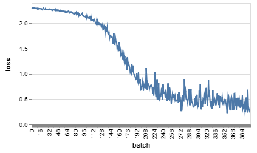

Assignment: 3
Name: Bibek K Pandit
Email: bibek@mit.edu
- Spend some time playing with this demo. Draw an input, modify it, and observe how the results at each layer change as you change the drawing. Create some inputs that look vaguely like digits, but that confuse the network, i.e., where two or more of the labels register. Write up interesting observations about what you see combined with illustrative screenshots.
- Model performs well on most handwritten digitsl. However, it gets confused very easily. A number written in dotted format (like 4 in following image) is widely misclassified. Similarly, numbers drawn in a very distinguishable manner, but slightly off-center of rotated are mis-classified.
- (Section 3.5) 1. What happens when you pass an image through the same filter several times? Do you observe any interesting characteristics or padding artifacts?
- Yes, there is padding artifacts and the model image starts looking more and more like like the style image.
- (Section 3.5) 2. Apply a filter to an image and then apply another filter to that already-filtered image. Is the result similar to what you would get when you apply the second filter to the original image?
- No, the results are different as can be illustrated in the following images.
- (Section 3.5) 3. Try different combinations of filters and number of times you filter an image. Note on your website if you have any interesting observations or insights.
- La Muse applied 4 times on face, and then applied the scream.
- (Section 3.6) 3. Do you have a hypothesis for why CIFAR-10 is so much harder to train on than Fashion MNIST and MNIST (i.e. it’s more difficult to achieve a 90%+ accuracy) while Fashion MNIST has similar training times to MNIST (even though Fashion MNIST is more complex than MNIST)?
- CIFAR-10 contains RGB images with a lot more details in the background whereas Fashion MNIST and MNIST are grayscale images with few details and little background noise. This is why it’s much harder to train on CIFAR dataset.
- (Section 3.6) 4. How does adding more convolutional layers relate to accuracy and training speed? Is there a point at which adding more layers plateaus or even decreases the maximum accuracy you are able to achieve with that model?
- Adding more convolutional layers increases the accuracy initially. It also increases the training time (decreasing the speed) by a few orders. When the number of convolutional layers gets around 8-10, the performance starts decreasing, while the training time ever-increasing. The assumption is this is due to decreasing gradient flow across the layers.
- (Section 3.6) 5. Challenge: Are you able to find an architecture/combination of techniques that can get you to 60% accuracy on CIFAR-10 within 1 minute of training? 5 minutes? 10 minutes?
- No, getting even 60% accuracy is hard.
- (Section 3.6) 7. Add links to your code files on your website (please make sure these are text files and not screenshots so that the graders can run your code if necessary).
- Here is the link to modified code.
Applying two different filters


Applying one filter

Training on MNIST data
